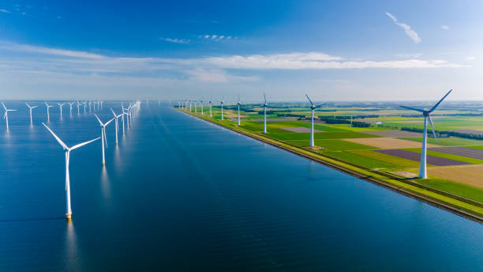
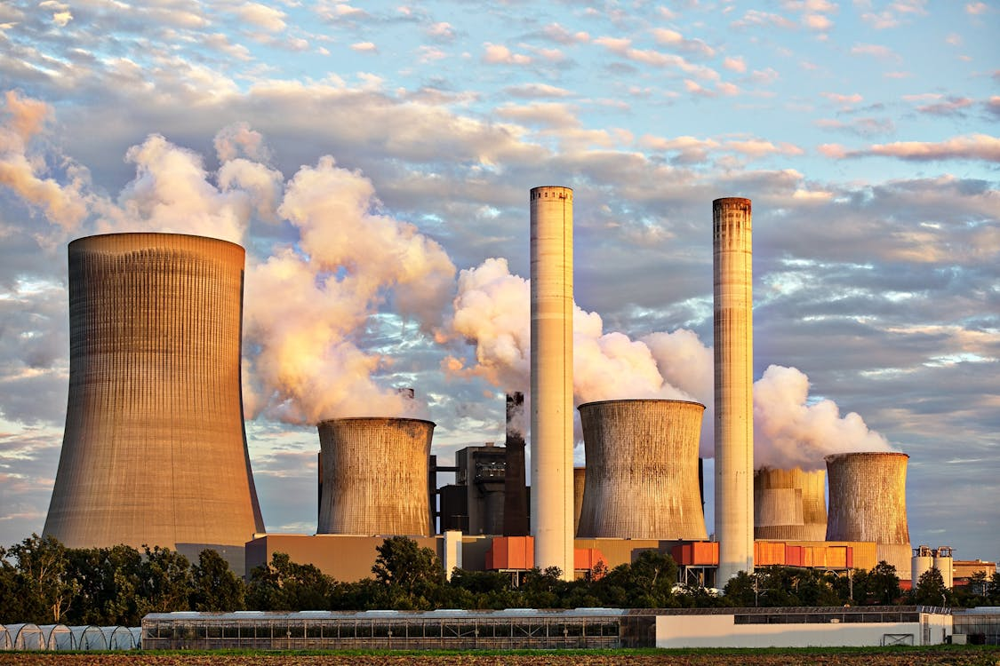

Preserving Natural Resources
Preserving the sustainability of renewable and non-renewable resources is crucial for future generations. SISE focuses on educating people about the responsible usage of resources like water, energy, and minerals.
- Reduce consumption of non-renewable resources like fossil fuels.
- Encourage renewable energy sources like solar and wind.
- Promote resource recycling and reuse.
Protecting Water Resources
River and sea water pollution due to plastic and chemicals is a growing concern. SISE provides insights on minimizing water contamination and protecting aquatic ecosystems.
- Encourage plastic-free zones and proper waste management.
- Promote the use of biodegradable products.
- Highlight the dangers of industrial and chemical pollution in water bodies.
Protecting Air Quality
Air pollution caused by industries and fires contributes to health issues and climate change. SISE aims to reduce carbon dioxide emissions and other pollutants.
- Promote energy-efficient technologies.
- Encourage afforestation and urban green spaces.
- Raise awareness about the dangers of industrial emissions.
Protecting Soil Health
Soil pollution from plastic waste and harmful chemicals threatens agriculture and biodiversity. SISE works on spreading knowledge about sustainable farming and waste management.
- Avoid the overuse of chemical fertilizers and pesticides.
- Support organic farming methods.
- Encourage composting and waste segregation.
Reducing Risks from Human Activities
Daily human activities have a significant impact on the environment. SISE advocates for safer and environmentally friendly practices in homes and industries.
- Adopt energy-saving habits like switching off unused devices.
- Use eco-friendly products and avoid single-use plastics.
- Implement safety measures in industrial practices.
Together for a Greener Tomorrow
Remember, small actions lead to big changes. By conserving the environment, we are not just protecting nature but safeguarding our future and the planet we call home. Together, we can make a difference. 🌍